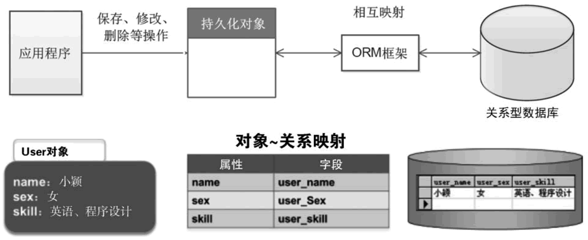

首页 > 编程笔记
主流Java ORM框架有哪些？
ORM 是 Object Relational Mapping 的缩写，译为“对象关系映射”框架。
所谓的 ORM 框架就是一种为了解决面向对象与关系型数据库中数据类型不匹配的技术，它通过描述 Java 对象与数据库表之间的映射关系，自动将 Java 应用程序中的对象持久化到关系型数据库的表中。
ORM 框架是一种数据持久化技术，即在对象模型和关系型数据库之间建立起对应关系，并且提供一种机制，可通过 JavaBean 对象操作数据库表中的数据，如图1所示。
在实际开发中，程序员使用面向对象的技术操作数据，而存储数据时，使用的却是关系型数据库，这样就造成了很多不便。ORM 可以在对象模型和关系型数据库的表之间建立一座桥梁，程序员使用 API 直接操作 JavaBean 对象就可以实现数据的存储、查询、更改和删除等操作。
MyBatis 框架通过简单的 XML 或注解进行配置和原始映射，将实体类和 SQL 语句之间建立起映射关系，是一种半自动化的 ORM 实现。
开发者并不需要熟练地掌握 SQL 语句的编写，Hibernate 框架会根据编制的存储逻辑，自动生成对应的 SQL，并调用 JDBC 接口来执行，所以其开发效率会高于 MyBatis 框架。
然而Hibernate框架自身也存在一些缺点，例如：
这些问题导致其只适合在场景不太复杂且对性能要求不高的项目中使用。
Hibernate 官网：http://hibernate.org/
与 Hibernate 框架相比，虽然使用 MyBatis 框架手动编写 SQL 要比使用 Hibernate 框架的工作量大，但 MyBatis 框架可以配置动态 SQL 并优化 SQL、通过配置决定 SQL 的映射规则，以及支持存储过程等。对于一些复杂的和需要优化性能的项目来说，显然使用 MyBatis 框架更加合适。
MyBatis 框架可应用于需求多变的互联网项目，如电商项目；Hibernate 框架可应用于需求明确、业务固定的项目，如 OA 项目、ERP 项目等。
MyBatis 3 中文文档：https://mybatis.org/mybatis-3/zh/
所谓的 ORM 框架就是一种为了解决面向对象与关系型数据库中数据类型不匹配的技术，它通过描述 Java 对象与数据库表之间的映射关系，自动将 Java 应用程序中的对象持久化到关系型数据库的表中。
ORM 框架是一种数据持久化技术，即在对象模型和关系型数据库之间建立起对应关系，并且提供一种机制，可通过 JavaBean 对象操作数据库表中的数据，如图1所示。

图1：ORM 映射关系
图1：ORM 映射关系
在实际开发中，程序员使用面向对象的技术操作数据，而存储数据时，使用的却是关系型数据库，这样就造成了很多不便。ORM 可以在对象模型和关系型数据库的表之间建立一座桥梁，程序员使用 API 直接操作 JavaBean 对象就可以实现数据的存储、查询、更改和删除等操作。
MyBatis 框架通过简单的 XML 或注解进行配置和原始映射，将实体类和 SQL 语句之间建立起映射关系，是一种半自动化的 ORM 实现。
主流的 Java ORM 框架
当前 Java ORM 框架产品有很多，常见的框架有 Hibernate 和 MyBatis，其主要区别如下。1) Hibernate
Hibernate 框架是一个全表映射的框架。通常开发者只要定义好持久化对象到数据库表的映射关系，就可以通过 Hibernate 框架提供的方法完成持久层操作。开发者并不需要熟练地掌握 SQL 语句的编写，Hibernate 框架会根据编制的存储逻辑，自动生成对应的 SQL，并调用 JDBC 接口来执行，所以其开发效率会高于 MyBatis 框架。
然而Hibernate框架自身也存在一些缺点，例如：
- 多表关联时，对 SQL 查询的支持较差；
- 更新数据时，需要发送所有字段；
- 不支持存储过程；
- 不能通过优化 SQL 来优化性能。
这些问题导致其只适合在场景不太复杂且对性能要求不高的项目中使用。
Hibernate 官网：http://hibernate.org/
2) MyBatis
MyBatis 框架是一个半自动映射的框架。这里所谓的“半自动”是相对于 Hibernate 框架全表映射而言的，MyBatis 框架需要手动匹配提供 POJO、SQL 和映射关系，而 Hibernate 框架只需提供 POJO 和映射关系即可。与 Hibernate 框架相比，虽然使用 MyBatis 框架手动编写 SQL 要比使用 Hibernate 框架的工作量大，但 MyBatis 框架可以配置动态 SQL 并优化 SQL、通过配置决定 SQL 的映射规则，以及支持存储过程等。对于一些复杂的和需要优化性能的项目来说，显然使用 MyBatis 框架更加合适。
MyBatis 框架可应用于需求多变的互联网项目，如电商项目；Hibernate 框架可应用于需求明确、业务固定的项目，如 OA 项目、ERP 项目等。
MyBatis 3 中文文档：https://mybatis.org/mybatis-3/zh/
关注公众号「站长严长生」，在手机上阅读所有教程，随时随地都能学习。内含一款搜索神器，免费下载全网书籍和视频。

微信扫码关注公众号